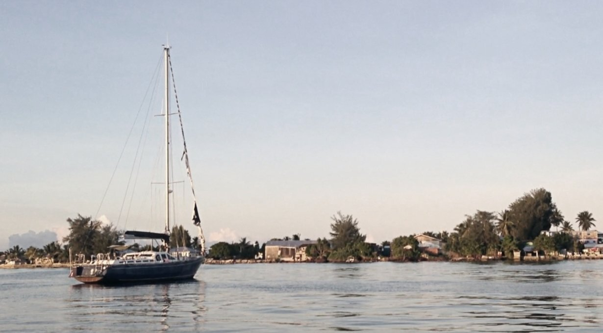

the promise of pancakes
The Promise of Pancakes
2018.11.15
Majuro Atoll, Marshall Islands
As soon as we tied to our mooring ball in Majuro's lagoon, the worries of the previous 24 days vanished, but were soon replaced by the crushing weight of responsibility. Devine, stoic, wanted to have pancakes. They wanted to sleep and check-in tomorrow, but they know how uptight I am when it comes to bureaucracy and that this was not what we'd be doing first (even if it is what I secretly wanted too...). My thinking was that I'd rather get the paperwork out of the way first, to get all of that worrying out of me, so I can eat pancakes in peace.
Spending a prolonged time at sea leaves us looking a little ragged. We dug out fresh clothes out of our bins, rinsed the salt from our skin, all with the goal of looking presentable for Marshall Island officials. Before going to shore we back Iggy the kiss of life.
Our neighbor, that we came to know as Charlie from the American-flagged sailboat Seagate, rowed over in his inflatable. He and his partner Julia had been here a while already, they gave us some tips and recommendations for getting around in Majuro.
We learned that the customs and immigration offices were right next to each other, and that the best way to get there was to take a cab. Majuro isn't a big island and it is possible to walk, but the many wild dogs nipping at your heels make it dangerous, we didn't try, especially after seeing numerous dead cats rotting in the sun on the side of the road(pardon the visual). Our noses will never forget that stench. Despite the island being small and having a single road, it is crazy how many cars are on it, many of those cars are cabs. Everyone in Majuro rides on cabs. It costs 1 US dollar per person. To get one to stop for you, you have to stick your hand out with your fingers indicating how many people are in your group. If they've got room they'll stop, otherwise they'll flash their lights and keep going.
Our new neighbor told us about the restaurants here, a good one being a place that Devine understood to be called Thai Table, and I, as Lanai Table. Both of us were sure of what we'd heard so we didn't bother to ask him to repeat it—that happens a lot, our brains stop working after long passages. We later learned it was called Tide Table—ah, yes of course. Charlie must have been confused when Devine asked him if he thought the Thai food there was any good.
At that point we knew where to find everything. We knew where to get drinks, food, internet, and where to check in. Charlie did mention that tomorrow was a holiday though, so that if we wanted to get these things we'd need to do it all today.
We put our passports and clearance papers from Fiji in our dry bag, attached Turnip the outboard to Iggy's transom, and motored over to the dinghy dock ashore next to a bar called Shoreline. The small dock had fishing boats moored onto it, but at the back of it near the ramp were other dinghies. We left Iggy there so it could socialize and stepped foot on land after 24 days on the ocean.
We walked past the bar to find the main road. We knew that the customs and immigration offices were on the south end of the island, so we stood on the right side of the road to catch a cab in that direction. Devine spotted a cab, stuck out two fingers but it drove on. We did this for every cab. The first 5 all skipped us.
The street was mostly occupied by cabs, with few personal vehicles around. We assumed that it was rush hour, it being near noon which coincides with the time people take off from work to eat at home. In many countries we've visited, a lot of businesses close around noon and open again around 1300 or 1400, this is true for Mexico and French Polynesia. I didn't make the connection in my brain then, that the government offices may also be closed, I was too busy trying to find a cab to pick us up. When tired my brain can't process too much information at once, multitasking just can't happen.
One cab did stop, it had two spots available. We sat inside, saying a friendly "hello!" and realizing then again that we had no idea how to say hello or anything else in Marshallese. We learned later that 'hello' is yokwe, pronounced yi-yak-wey. We asked the driver to stop at the immigration office. The cab driver did not respond to this right away, maybe they called the immigration office something else here? I'd heard that people here often make use of acronyms to refer to banks, stores of government offices, but unfortunately I wasn't familiar with them. Right now, I wished I'd taken the time to find out what that acronym was. The driver asked something in Marshallese to the other passenger, who replied back in Marshallese. I understood nothing but the word 'finance'. Something clicked in my brain, Charlie had specified that the customs office had the word 'finance' on it. Our driver now knew where to stop.
While in the cab we sponged up our new neighborhood. It was very grey and rainy that day, but people were cooking food on grills outside anyway. The rain helped to subdue the cloud of black smoke rising from their BBQs. One restaurant had stalks of bananas laid out on tables on the storefront, as well as some pinecone-like fruit that I'd never seen before. The shop also had breadfruit, but they were small and oblong, different than the ones I was used to. We took note of the stores, going past a few supermarkets like Island pride, Payless and EZ mart. We had no more vegetables aboard so we'd have to stop by later to get something fresh to eat.
At this point, we thought we could get back to the boat before 1300. Our plan was to make pancakes and coffee. My brain required caffeine and fidgeted uncomfortably in my skull.
When in a cab in Majuro, passengers don't call out where they want to go when getting in, in fact, we were startled by the absence of conversation; people usually just say when they want to get off, like on a bus. When you board a cab here, you have to make sure its going the right way because a car going south will not go north for you, it goes in that direction and that's it! This system only works in places like this, with a single road connecting all areas on the island. The cab stops for people as long as there is room, and will keep going until the end of the road, then turn around and go the other way.
The cab ride was short. The driver dropped us off in front of the office with the word 'finance' on it. We paid him two dollars—one for each of us—and stepped out.
We decided to go see immigration first in the next building, sitting on the 3rd floor. We took the elevator, the door opening onto a space that appeared to be under construction. We asked the first person we ran into, making sure that this was where immigration was and they nodded, pointing to a door at the end of a short corridor. The door was closed, and had a sign on it stating that because of construction the office operated on a limited schedule, and closed at noon.
The immigration office was closed for the day. Tomorrow was a holiday, and then it was the weekend. It wouldn't open until Monday. We stared at the door for a while, saying nothing, as if trying to process it all inwardly. Then someone noticed we were staring and asked if we were looking to check in. This was the immigration officer, the office had just closed but he re-opened it and offered to check us in. We filled in the papers he pushed in front of us, and he took our clearance papers from Fiji and our passports. He looked at them, and then gave them back, telling us to come back to finish the process some other time. We were confused. He explained he couldn't mark our passports because the other worker had left with the only official stamp tool in the office. He offered to check us in tomorrow, to meet him at Shoreline (the bar next to the dinghy dock) despite it being a holiday. We said okay, not sure what else to do. We thought it suspicious, but it being out of hands we thought it best to show up tomorrow and just wait and see.
We strolled over to customs, but they were closed for lunch and were supposed to re-open at 1400. It was now 1215, we had some waiting to do and so Devine suggested we go and get some data for our phones and then stop to have lunch at Tide Table. I was hungry, but hungry for something specific, I wanted to be in a dry place with a cup of coffee and some pancakes. I knew I couldn't have that now, and this put me in a terrible mood—I am always terribly grumpy when hungry and tired. We couldn't agree on anything.
We were hiding from the rain in front of the 'finance' office, talking and trying to make a decision when we spotted the immigration officer getting into his car. First, he backed onto a traffic cone, then it got wedged between the wheel and body of the car, he stuck his head out, but didn't look like he wanted to deal with it(or maybe he hadn't seen it) so he drove on. We watched him disappear down the road, a bright orange cone trapped under his car, dragging on the pavement and making an awful racket.
We laughed. This helped coax me back into a good mood. If we wanted to get internet, we'd have to cab there, then, cab back to Tide Table, then cab over here at the customs office again only to cab back yet again to go back to the boat. I don't like riding in cars, but since the street had little to no sidewalks and that the road was bordered by giant puddles of water, I stuck out two fingers at the passing cabs. "Getting internet probably won't take long, then we can eat! Food? Remember food and how it makes you happy?" Devine said to me. My stomach growled at these words, as if the word food itself could give me sustenance.
We took a cab over to NTA, an internet service provider here in Majuro. We went to sit in the waiting room, facing a giant green wall with a large 4G cutout, with the two employees sitting in front of a folding table, made pretty with tablecloth with a pattern of tropical flowers. The youngest of the two employees waved us over. We wanted SIM cards for our phone, that we would both tether from, but when he saw the phone he told us it was too old.
We had an Iphone 5S. We thought it funny to come here, in a lonely atoll in the Marshalls only to be told that our phone was too old. Looking around we could see everyone had better phones than we did.
"Is there another internet provider in Majuro?" We asked. They laughed, as it had been a joke question. Like, "guys, this is an atoll with a land area of 9.7 square kilometres, much of it unnocupied." We had our answer. When the laughing stopped, they suggested we get a pocket WiFi. It costs us 70$USD for the device and then another 70$ for 50G of data (speed slows when limit is reached). We had no choice. Unfortunately, they were out of devices, but we're expecting more after 1400.
Just our luck. We really wanted to get internet today, because we feared the office would be closed tomorrow. We would have to find something else to do (again) and come back at that time to get the device.
By that time both of us were starving and figured that after this evergrowing list of failures, getting some food was a good idea. We hailed a cab and stopped at Tide Table, a restaurant annexed to a hotel called the 'RRE'. Walking around town that day, we noticed many building had that same acronym. It stands for Robert Reimers Enterprises—a company that owns a lot of buildings and stores here in Majuro. Tide Table is a bright blue building, because of the paintings on the outside it looks like it hosts an aquarium. We climbed up to the second floor to the restaurant and took a seat inside. It was air-conditioned, and because our clothes were wet our skin turned to ice. We picked the lunch special, consisting of a rice and vegetable curry. I wondered what sort of vegetables they'd be putting into the curry knowing that Majuro didn't have a great variety. Before arriving, I'd read that most of the vegetables here are shipped frozen from either Hawaii or Guam. I've had the experience of buying previously-frozen produce before, the carrots rot within a day and the tomatoes taste like water. When buying vegetables, you've got to go when the ship's just arrived, or be willing to not buy certain items. This means i'll often choose potatoes, pumpkins or cabbage over peppers and fresh greens.
We ordered the curry anyway, it had black beans and bits of pepper and cabbage. Here in Majuro people use what they can get, and because of this the recipes vary from day to day. That is a very sound way to run a business, I thought. We really enjoyed the food. We also ordered bottom-less coffee to attempt to re-animate our freezing corpses. We drank many cups, color returning to our flesh with every gulp. We are revenants, disciples of the church of coffea arabica.
By the time we finished eating it was 1410. I downed my last cup of infinite coffee and we cabbed back over to customs to get our paperwork done. When we arrived, the office was still closed, with a line of fidgety customers waiting at the door. We too added to this line, equally annoyed and fidgety. After 20 minutes, the doors opened and we hurried inside, presenting our papers. He spoke little English. He asked us for our papers, but we didn't know which papers he meant. Looking through our pile of paperwork he saw a set of clearance papers from Fiji and took those. He then asked us if we had papers from immigration for him—or at least, that's what we understood he'd said. The immigration officer gave us no paperwork, because we weren't technically completely checked-in yet.
He took note of everything, our boat name, time of arrival etc. The official then ended the interaction with a simple "ok!" We looked at him, "Everything is ok?" He nodded. "Yes it's okay". Things weren't okay. We had no papers, no receipts, no proof that we had checked in. "Okay?" I said, confused. Now we had no more clearance papers from Fiji, they'd taken those, no stamps in our passports, and no paper what-so-ever confirming that we'd checked in.
This is how it was at the time in Majuro. Unlike Fiji, you don't have endless stacks of papers to fill or documents to hold onto afterwards. At the time though, I didn't know this, used to the thoroughness and tediousness of New Zealand-style bureaucracy. We left the building then.
"We don't have anything confirming anything." I said, perplexed.
"They know we're here. We did sign that paper at Immigration, and he did take our clearance forms so we are in 'the system'. Tomorrow he'll stamp our passports and we'll be good!" Devine said, stoicly.
We headed back over to NTA to get our precious internet. As promised, they had the unit and we paid the required amount. We had internet again! The internet was fast, and we could get it even if our boat was far out at the outer edege of the mooring field.
We made it back to Shoreline, to the dinghy dock to meet back with Iggy. Iggy was deflated, but we attributed that to the cold weather. We pumped air back into the tubes and motored back to Pino. The weather was really rough that night, and the next morning was no better. It was raining non-stop. Iggy was becoming a swimming pool and kept losing air. I had to go bail water out, and pump air into it every 3-4 hours to keep it afloat.
Iggy the dinghy has been giving us a lot of trouble lately. The problems started in Fiji after we left Savusavu, good friends in Makogai gave us a tow as a favor and the force of the pull caused the lining between the two 2 air chambers inside to tear. We had another problem, the seams started to come apart. While in Lami (Fiji), our kind boat neighbors introduced us to a local who lent us a hard dinghy, we used while getting Iggy patched up (a dinghy we nicknamed Tippy, you can guess why). We did manage to fix Iggy, and this fix lasted us till the end of our stay in Fiji, but after 3 weeks of being folded on deck, Iggy developed another bad leak.
That morning, Devine took our passports to shore with Iggy in the rain to meet the Immigration Officer so we could get our passport stamped. 30-40 minutes later Devine returned, soaked with a deflated Iggy. The outboard decided to quit halfway to shore, then Iggy began to lose air. Devine was adrift, sinking, but drifted near a sailor on his boat. The kind, kind sailor offered Devine a tow to the dock. "Your dinghy doesn't look sea-worthy," he'd said, and he was right. Iggy was no longer safe.
To make matters worse, the officer was a no-show. It was probably for the best, we'd go back to the office on monday ourselves instead.
This trip to shore revealed another serious air leak in Iggy. Back aboard, we took turnip off in fear that it would sink with Iggy if it lost all of its air. I climbed into our inflatable to assess the damage and saw that one of the seams on the front left side was wide open. There was nothing I could do from the water and so we heaved Iggy back on deck. I bought some PVC glue back in Suva (Fiji) that we could use to mend it, but by now both of us didn't trust Iggy anymore. Every time we glued one seam, another would come apart elsewhere.
We weren't sure what to do. We were boat-bound with no means of getting to shore. When we left Fiji, we signed up to an email exchange group for those traveling to the Marshall Islands. On arrival, Karin from the sailboat Seal sent us a message to welcome us. I sent her a message explaining our situation, and she promptly alerted her partner Cary. He came to see us the next day, and when Devine told him of our dinghy problems he offered to rent us a hard dinghy.
This is the dinghy what we have been using since, a great fibreglass tender and better alternative to Tippy. We've been trying to repair Iggy in the meantime, doing our best to heal all its wounds but we know it won't last. At least we have some means of going to shore now, and this amazing hard dinghy just confirms our desire to have one for Pino in the future (in August 2021, we got our own hard dinghy which we named teapot).
This concludes our entrance story into Majuro! We've since had our passport stamped. It took 2 days of going back and forth from boat to office. On the first visit, one of the officials was gone to the airport with the stamp tool, so the employee in the office at the time asked us to come back some other time. The officials that clear in foreigners in airports are often the same ones that sit in office. Checking into the Marshalls in Majuro, we realized, is like playing a game of trying to catch them while they're in office, and making sure to refuse any offer to complete the process outside of regular hours.
Clearing it wasn't great, but overall daily life here is good. The veggies are often rotten or scarce, but only if you want to eat like at home. Bananas, breadfruit, papayas and pandanus are plentiful, and the restaurants are good and inexpensive. There are lot of good Japanese and American products available, like Asahi beer and lotus root snacks. The locals are welcoming, understanding and kind. We had a few laughs with the ladies that work at the ACE hardware after we caught them playing with some wind-up mouse toys in one of the aisles. This ACE hardware is well-furnished with electrical items that have our voltage (Pino is 110V). We bought a second fan for the boat there, something I wish we'd had for our last sweaty passage. The internet here is great, we have a fast connection and can work from our floating office.
I forgot to say, but after getting back to Pino on the first day we made some savoury pancakes for dinner and it was the BEST.
To find out more about clearing into the Marshall Islands, read this guide by the Mieco Beach Yacht Club. Entry procedures change a lot from year to year, but SV Seal are on top of it and they're the best people to contact if you're planning on adding this stop to your list.